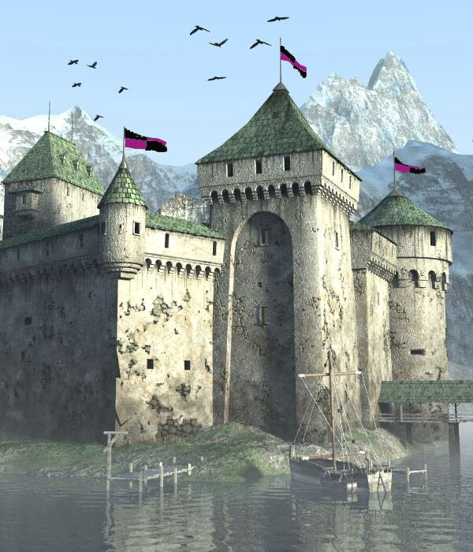
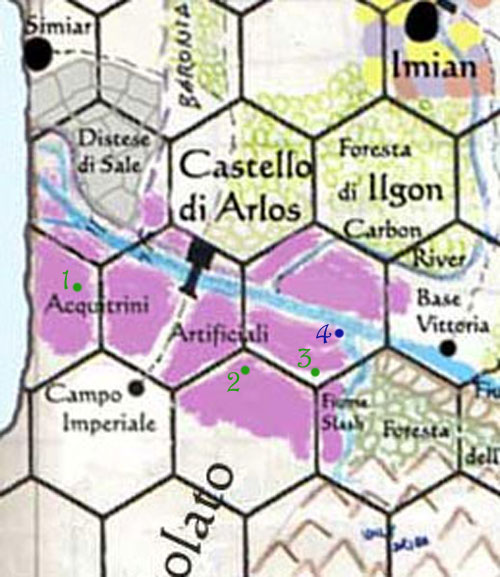

Il Castello di Arlos è la più grande ed importante roccaforte militare pergariana. Nata per difendere l'intera penisola di Karsar da un eventuale invasione proveniente da sud è posizionata al centro della striscia di pianura che è delimitata ad est dal Massiccio Isolato ed ad ovest dal Golfo della Civiltà. A seguito dell'isolamento politico pergariano e delle continue tensioni internazionali, nonché per accrescere il controllo sulla popolazione interna e per frenare l'emigrazione questa zona di pianura fu oggetto di una mastodontica opera di trasformazione. L'intera striscia di terreno fu inondata facendo avanzare le acque marine verso l'interno, deviando il flusso di ruscelli e piccoli fiumi montani del Massiccio, nonché facendo straripare in vari punti il Fiume Profondo ed il Fiume Slash. Con tale opera venne creata artificialmente una grande area palustre denominata la zona degli Acquitrini Artificiali.
Il Castello di Arlos che rappresenta un importantissimo centro militare ed amministrativo è posizionato su un istmo di terra emersa ed è circondato dalla palude artificiale. L'accesso alla rocca sia verso l'interno che verso l'esterno è fornito da ponti sospesi o terrapieni cavalcabili rivestiti con legno e massi. Molte zone degli acquitrini sono, inoltre, navigabili utilizzando chiatte od altre specifiche imbarcazioni.
All'interno del Castello di Arlos è ospitata l'Armata Karsar. Si tratta di un'armata completa di 1000 soldati ed unità specializzate per altri 50 uomini. L'Armata Karsar è la più efficiente armata pergariana, formata da uomini selezionati e con la più elevata percentuale di truppe scelte. Si tratta di soldati esperti e disciplinati. Attualmente il comando sull'armata spetta al Primo Generale Imperiale, Il Sublime Krain Vogarn (Fighter del 10° livello di esperienza). L'armata rappresenta un corpo di intervento sempre pronto a lasciare in poco tempo la roccaforte per recarsi in missioni all'interno del Granducato od oltre i suoi confini. Le sue unità lasciano costantemente la roccaforte per allenarsi in pericolose missioni di pattugliamento del confine esterno del Granducato, anche al fine di evitare che creature lascino o entrino nel Granducato senza avere la dovuta autorizzazione.
La difesa del Castello di Arlos è di competenza del Corpo di Guardia di Arlos. Questo considerevole corpo militare ha il compito di difendere la roccaforte, di vigilare sulla sua sicurezza, di svolgere il ruolo di polizia militare nei confronti delle truppe ospitate, nonché di occuparsi del controllo del traffico in transito per la roccaforte in entrata ed uscita dal Granducato. Il Corpo di Guardia di Arlos composto da 800 soldati è sotto il comando del Primo Generale Imperiale, Il Sublime Xelis Ordoi (Fighter del 12° livello di esperienza). Alle dipendenze e sotto il controllo del corpo di guardia vi sono inoltre le oltre 100 unità logistiche composte da fabbri, armaioli e corazzieri, medici ed infermieri, ecc... ecc...

Sia le truppe del Corpo di Guardia di Arlos che dell'Armata Karsar portano lo stendardo e lo scudo della roccaforte composto dai caratteristici colori nero e viola.
Servizi presso il Castello di Arlos
Nel Castello di Arlos hanno accesso unicamente i militari dell'Armata Karsar e quelli del Corpo di Guardia di Arlos. Tutti gli altri soggetti (sia altri militari che i "civili") possono entrare unicamente se dotati di permesso firmato dal Primo Generale Imperiale del Corpo di Guardia di Arlos o da un ufficiale da costui delegato. Costoro, denominati ospiti autorizzati non possono in ogni caso recarsi in tutte le zone del castello ma solo in un'area delimitata chiamata "zona commerciale" dove sono erogati i servizi principali (mense, fabbri, ecc...) e dove si trova l'accesso per il Tempio del Veleno. I posti come ospiti sono molto ricercati, spesso per la protezione che si ottiene in questa roccaforte o per la sua vicinanza al confine sud.
A differenza di molti altri soldati, i militari professionisti di stanza nel Castello di Arlos godono di alcuni privilegi. Hanno diritto al vitto e all'alloggio nel Castello anche quando non sono in servizio ma decidono di restare a vivere all'interno della roccaforte (in questo modo si assicura la permanenza di un gran numero di truppe pronte a difendere il confine in caso di pericolo). Per questo stesso motivo, sempre nella "zona commerciale" sono erogati alcuni servizi, anche di intrattenimento all'interno della roccaforte:
Zona di
addestramento
Si tratta di una zona dove vi sono le strutture per allenarsi in corpo a corpo e
con le armi a distanza (manca, però, una zona per addestrarsi a cavallo).
Costo per i militari di
stanza: Nessuno
Costo per gli ospiti
autorizzati: 1 karso al
giorno
Mensa militare
Sono varie le sale per la
mensa militare. I militari
di stanza accedono gratuitamente alla
mensa a cui hanno diritto mentre gli ospiti a quella a cui sono stati
autorizzati. Il contratto di accesso alla mensa è solo mensile.
Mensa Soldati
- Costo per
gli ospiti autorizzati: 1,8 karsi al mese
Mensa Capitani di Comando - Costo
per gli ospiti autorizzati:
3,6 karsi al mese
Mensa Ufficiali Superiori (sublimi) - Costo
per gli ospiti autorizzati:
6 karsi al
mese
Stanze
private
Sono stanze ubicate nella roccaforte e destinate ad alloggiare gli
ospiti autorizzati (i
militari di stanza hanno le caserme o le stanze se ufficiali) e si trovano
unicamente nella "zona commerciale". La percentuale
annua che si trovi libera
una di queste stanze, per periodi superiori a pochi giorni, è indicata prima
del tipo di stanza.
70%
Camera singola
ammobiliata: Costo 0.5 karsi al
giorno (compresa manutenzione)
60%
Camera doppia ammobiliata:
Costo 0.75
karsi al giorno (compresa manutenzione)
Settori privati
Sono settori ubicate nella roccaforte e destinate ad alloggiare gli
ospiti autorizzati che
abbisognano di maggiore spazio (a volte per svolgere attività professionali di
interesse rilevante per la roccaforte). Il contratto di accesso al settore ha la
durata fissa di un anno
(deve rinnovarsi ogni anno) e non è comprensivo di alcun arredamento. La percentuale
annua che si trovi libero
uno di questi settori è indicata prima del suo tipo.
55%
Piccolo Settore privato (3
stanze per 80 mq.) Costo 70
karsi al mese
45%
Grande Settore privato (5
stanze per 200 mq.) Costo
250 karsi al mese
Fucina
della Dura Roccia
E' una fucina privata
famosa in tutto il Gran Ducato dove lavorano fabbri esperti ed è retta da un
ex-militare in pensione chiamato Vulgus,
il Maglio Nero. Questa
fucina che serve principalmente gli ufficiali della roccaforte per riparare le
loro armi ed armature personali (quelle dei soldati sono riparati da fabbri
militari). Offre vari servizi di riparazione e fabbricazione anche di armature
di fattura speciale.
Emergency
Repairation (check base 17)
Corazze : Costo
militari : 1 karso, Costo
ospiti: 3 karsi
Affilature :
Costo
militari : 3 scuri, Costo
ospiti: 1 karso
Armorer (check
base 17), Special Armorer (check base 17)
La fucina comprende oltre agli strumenti base:
Fornace per alte temperature, strumenti meccanici da lavoro e pressa per piastre
metalliche. Tutti i militari
di stanza hanno diritto al
10% di sconto.
Stalla
della roccaforte
In questa grande stalle alloggiano cavalli, muli e carri dei militari e degli
ospiti autorizzati. I costi sono tutti giornalieri.
Cavalcatura da sella o da tiro: Costo
militari : 0.1 karsi, Costo
ospiti: 0.15 karsi.
Carro: Costo
militari : 0.2 karsi, Costo
ospiti: 0.35 karsi.
Banca
Scura
Nella Roccaforte c'è una piccola filiale della Banca Scura. Si tratta di una
comune filiale con l'unica eccezione che non
è effettuato alcun servizio attinente al credito.

